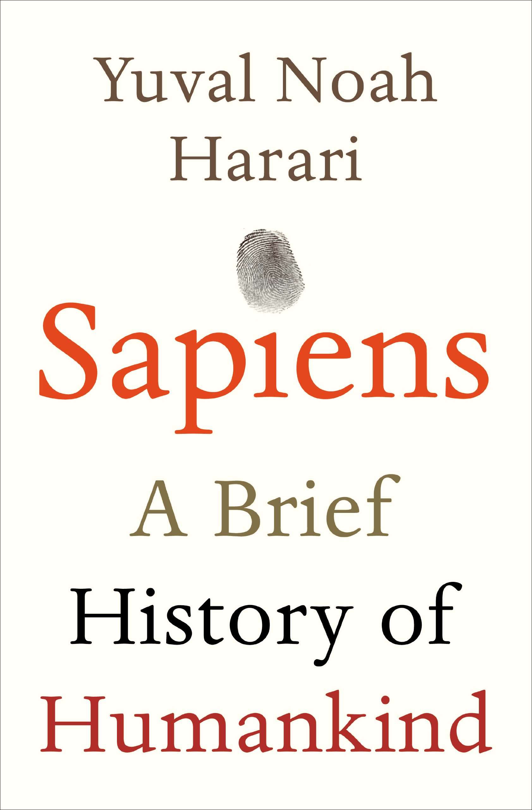

Steven Moore
Coding Enthusiast and buzzword specialist (#blockchain)
Since learning is a lot of fun, I would like to share my favorite books and information soruces
My sources for inspiration & knowledge
|  |
Human history has been shaped by three major revolutions: the Cognitive Revolution (70,000 years ago), the Agricultural Revolution (10,000 years ago), and the Scientific Revolution (500 years ago). These revolutions have empowered humans to do something no other form of life has done, which is to create and connect around ideas that do not physically exist (think religion, capitalism, and politics). These shared “myths” have enabled humans to take over the globe and have put humankind on the verge of overcoming the forces of natural selection. |

|
Coursera is an online learning platform founded by Stanford professors Andrew Ng and Daphne Koller that offers courses, specializations, and degrees. Coursera works with universities and other organizations to offer online courses, specializations, and degrees in a variety of subjects, such as engineering, humanities, medicine, biology, social sciences, mathematics, business, computer science, digital marketing, data science, and others. |

|
The Tim Ferriss Show is generally the #1 business podcast on all of Apple Podcasts, and it's been ranked #1 out of 300,000+ podcasts on many occasions. |